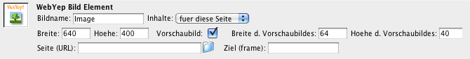

Referenz
WebYep Elemente sind kurze PHP-Code-Fragmente, die in den HTML-Coder der Seite eingebettet werden. Im Dreamweaver® können diese über die Objektpalette in die Seiten eingefügt werden.
Aber Sie können die nötigen PHP-Code-Fragmente auch mit jedem anderen HTML-Editor manuell in Ihre Seiten einfügen – siehe dazu die Referenzen der einzelnen WebYep Elemente.
Bitte beachten Sie, dass HTML-Seiten, die WebYep-Elemente beinhalten, die Dateiendung ".php" aufweisen müssen (nicht ".htm" oder ".html")!
Nach Installation der WebYep Dreamweaver® Extension finden Sie im Popupmenü am linken oberen Rand der Objektpalette eine neue Kategorie "WebYep":

Durch Klick auf eines der in der Objektpalette gelisteten Symbole wird das entsprechende WebYep-Element in die Seite eingefügt:
Das eingefügte WebYep-Element wird durch ein "PHP"-Symbol in der Seite dargestellt - wenn dieses selektiert wird, werden im Eigenschaftsfenster (Menü "Fenster / Eigenschaften") die Einstellungsmöglichkeiten des WebYep-Elementes angezeigt.

Im Dokument: Das eingefügte WebYep-Element
("PHP"-Symbol)

Das Eigenschaftsfenster mit den Einstellungsmöglichkeiten
für ein WebYep-Element
Wichtiger Hinweis: Stellen Sie sicher, dass Dreamweaver die "Unsichtbaren-Elemente" anzeigt: Menü "Ansicht / Visuelle Hilfsmittel / Unsichtbare Elemente" bzw. in den Voreinstellungen (Menü "Bearbeiten / Voreinstellungen") unter Kategorie "Unsichtbare Elemente" die "Server Markup Tags" aktivieren.
Die WebYep-Elemente können in die Gestaltung der Seite einbezogen werden, als wären sie ein Teil eines Textes oder ein Bild. Sie können zB. wie herkömmlicher Text formatiert werden (vorzugsweise mittels CSS).

Das WebYep-Element kann mit dem umliegenden Text einfach
mit formatiert werden (vorzüglich mittels CSS).
Zusammenfassung
- Im Dreamweaver® WebYep-Elemente werden durch Anklicken des gewünschten Symbols in der Objektpalette (Kategorie "WebYep") in die Seite eingefügt.
- Die WebYep-Elemente werden im Dreamweaver® durch kleine "PHP"-Symbole in der Seite dargestellt.
- Selektiert man dieses Symbol, so können im Eigenschaftsfenster die Einstellungen für das WebYep-Element vorgenommen werden.
- Die WebYep-Elemente können gestaltet/verschoben etc. werden wie herkömmliche Texte oder Bilder